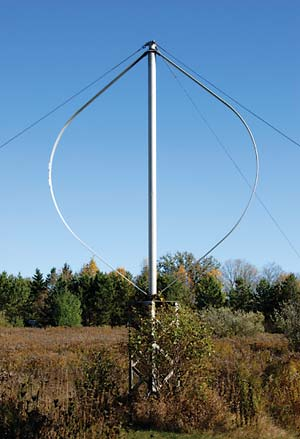

Worldwide interest in renewable energy options has given rise to a rash of new wind turbine designs. Some of the most recent models on the market are vertical axis wind turbines (VAWTs), which manufacturers claim are quiet, efficient, economical and perfect for residential energy production, especially in urban environments.
We asked Mick Sagrillo, veteran residential wind power authority, to answer our questions about this technology and its future in the realm of alternative energy.
First of all, how does a vertical axis wind turbine work?
There are actually two different designs out there. One’s called a Savonius rotor, which essentially, if you take a 55-gallon drum and cut it in half, then offset the two halves and put them on a shaft that rotates, you’ve built a Savonius rotor. It’s similar to an anemometer. A lot of what we see today are Savonius rotors. They’re very crude, very low-tech, very inefficient. We’re talking about something that operates in the, say, 5 to 10 percent efficiency range. People have been able to tweak the efficiency rate - ideally, they might be as high as 15 percent.
Then there’s the Darrieus model - the type that resembles an egg beater. Essentially, you have two vertically oriented blades revolving around a vertical shaft. But the Darrieus models use an airfoil design. A wind turbine airfoil works in the same way as an airplane wing. An airfoil has a flat side and a curved side. The result of air passing over the two sides is a force known as “lift.” When an airplane speeds down a runway, air passing on both sides of the airfoil wings, the lift force literally lifts the airplane into the air. This will continue as long as there is forward motion over the airfoil to generate the required lift.
A wind turbine uses this same principle, but instead of flying up and away, the airfoils are secured to a hub, which in turn is attached to a generator shaft. The air passing over the airfoils (wind turbine blades) are converted into rotational momentum which spins the generator.
On the Darrieus rotor, since the airfoils are the same as horizontal axis turbines, they will operate at the same efficiency. However, the difference occurs because a horizontal axis turbine's swept area always faces the wind. But with a VAWT, the swept area is a cylinder perpendicular to air flow. As such, part of the “swept area” is working, while part is simply being blown around, not at an optimal angle to generate lift. This results in a VAWT rotor that is less efficient than a horizontal axis rotor.
Anything with an airfoil, ideally, can be 59.3 percent efficient. In reality, a horizontal axis turbine operates somewhere around 35 percent. A vertical axis turbine is lower, maybe attaining 30 percent, which doesn’t sound like much, but other factors such as increased maintenance and lower energy production add to the difference.
The vertical axis turbine manufacturers claim there’s less wear involved because they don’t have to actively orient themselves to the direction of the wind. That’s actually untrue; it’s just the opposite. There are lots of claims relative to the fact that a vertical axis turbine can take winds from any direction, well, so can horizontal turbines. There’s actually more wear involved with the VAWT. I have a rubber ball on the end of rubber band. When I spin it around slowly, it makes a circle, and if I spin it fast, the rubber band stretches and it makes a bigger circle. That’s centrifugal force. So anything that spins and has mass has centrifugal forces working on it.
The interesting thing about horizontal axis turbines - and this is just a fluke of physics - has to do with the way the airfoil is designed for horizontals. The greatest stress on it is at the root of the blade near the hub, which happens to be the strongest part of the blade. On a vertical, if it’s the egg beater shape (sort of an oval), the greatest forces are at the center, not at the ends where it’s attached. If you make the blade straight it distributes the force more equally, which is where designs have gone recently, but there are some intrinsic problems with vertical axis design and centrifugal forces that really can’t be overcome. It’s just the nature of the design.
So there’s actually more wear and tear on a VAWT. The way they overcome that is by beefing up the design. This is why you don’t see vertical axis turbines commercially viable in the United States today. The manufacturers must use more materials, which means more labor. This also means that vertical technology weighs more. You have a bearing on each end that has to be supported, and it’s easy to do that at the bottom end but hard to do on the top. If you end up putting it on a tower, you need guyed cables that extend for long distances in order to clear the rotor.
Some inventors say that you can put it on a building or on the ground, which eliminates the guyed cable problem. Well, you can, but they need to go back and learn something about fluid dynamics. The reason turbines are on towers is because that’s where the wind resource is. Fuel increases as we increase our distance above the earth. Along the ground we have this zone of friction, and as you get away from the friction, you get faster moving air.
Enter buildings. Why not a building? Think about a flag pole in the city, and the flag is bobbing around and changing directions. If you go out to a school in the country, with wide open spaces, that flag is just straight out. You’re looking at the effect of ground clutter. Trees, buildings - all of that stuff creates turbulence. There are two problems with turbulence. Number one, wind that changes direction and speeds that go up and down translates into a lot of wear and tear on the turbine, which translates into a shorter life. The other thing is, there’s no power in ground-level wind. It’s just chaotic motion. There’s no real energy.
So the pitch and the rise of a roof wouldn’t accelerate or concentrate the wind’s energy? That’s bogus. That concept works and is actually true when you’re dealing with landforms. When dealing with terrain and topography, you’ve got a very wide, open area, miles around, and you’ve got a ridge that’s perpendicular to the wind. What happens is, when the wind approaches that ridge, it is compressed and the flow actually increases. When you deal with a building, wind goes around and just tumbles over it. They’ve downscaled the idea of topographic fluid dynamics and applied it to buildings. It’s not accurate, which has been very well documented with flow studies. The wind trips over obstacles, and when it trips, the wind can’t do the work it could have done without the obstacle. You’re creating turbulence and diminishing the quality of the wind resource. With wind, we’re dealing with quantity, yes, but we’re also dealing with quality. You want a nice fluid flow, not turbulence.
They seem to be gaining some popularity among consumers. Do they cost less? You know, it doesn’t matter. It’s not about initial cost. It’s about energy production over the 20- to 30-year-life of the turbine. Vertical technology is less efficient - the return on investment in terms of cost per kilowatt hour isn’t as good.
The whole thing is not about spinning. You can buy a pinwheel that spins. It’s really about generating electricity, and doing so reliably over many years. The vertical axis technology has just not been able to survive in the market.
There’s appeal for them in the marketplace because there’s something so visually appealing about a vertical axis turbine. There are actually studies in Europe showing that people are mesmerized by windmills. It’s called the frequency effect. It’s akin to sitting on a shore and watching waves come in, or a campfire, or wind on prairie grasses. The studies show that people are more fascinated by vertical axis turbines than horizontal, for one reason because you don’t see them as frequently, for another reason because verticals don’t have this tail moving around, which can be distracting, depending on how the wind is moving it around. People are fascinated by the technology because it’s very soothing. There are a number of inventers that take advantage of that.
Are better models on the way? It depends. Unfortunately, too many of these things have been created by self-styled inventers, people that have no engineering background, no physics background, no math background. They just sort of make something up. I know someone that came to me and said “Mick, I want to make a savonius rotor. I know that it’s not cost-effective. But if a person could make it inexpensive enough, and yet reliable so it lasts for decades like the horizontals do, would you support it?”
And the answer is absolutely yes. I don’t care if it’s vertical or horizontal. It’s all about what survives, what works, what generates electricity over the decades. It’s about fantasy as opposed to reality. It’s about things that really work as opposed to things we pretend to work, or want to work. So he had an engineering background, but didn’t know much about wind. And the interesting thing about this is, number one, the design has evolved from an inefficient Savonius rotor to a Darreius, and two, he’s been working on this thing for a couple of years with a real engineering firm that has been doing testing for wind for decades. He’s going about this the proper way, instead of tweaking it and making outlandish claims. He has attracted the attention of NREL, who are just a skeptical as I am about vertical technology. They’re going to take one of these turbines to test it. And I’m actually excited about this because he started out with a dream, educated himself, hired the right people. Because his idea was to make something that’s reliable and inexpensive enough to make up for the efficiency factor, and I think the guy may have something. I honestly think that in a year or two, we may see a commercial product that actually works and works for 20 years or so like it should.
So we’ll finally see some performance numbers? That’s my whole thing: None of them do. It’s like here’s this new technology and we want you to buy this. We want you to fund this. I say, “OK, send me the production numbers because it’s not about vertical, it’s about reliability, cost per kwh and how many kilowatt hours the turbine is going to generate in a month or a year.” But they can’t send you that. Because they haven’t tested it, or they’ve tested it and the results aren’t good, or they don’t know how to test it, and so on. It’s ridiculous. If you go to companies that have a good reputation in the small wind market, they’ve got that performance or production info. They may offer a power curve - so what? A power curve is like a horsepower curve for your vehicle, it has no bearing on reality at all. What you need to know is how many mpg are you getting? You’re selling this thing for $20,000 or $30,000 dollars and you can’t afford to put $500 dollars worth of equipment on it to monitor its output? That’s somewhat amazing to me.
Are they less noisy? No. I’ve heard very quiet machines and I’ve heard very noisy machines, in both horizontal and vertical axis technology.
Are there any situations in which a vertical model would be a better choice than a horizontal? Not today. Simply because there’s nothing reliable, there’s nothing cost-effective, there are no performance results, there’s no reality. That could change.
The bottom line is, vertical axis turbines are less efficient, and it takes more materials and labor to make the things. It’s pure economics. Things make it in the marketplace because number one, they work, and two, they’re cost effective. If you have a technology that’s more cost effective and more reliable, than the competing technology, the competition is going to fall out of the marketplace. And that’s exactly what’s happened, commercially speaking. We did see, in the early 1980s, a commercial wind turbine, developed by DOE and Alcoa, used in a wind farm out in Altamont Pass. They kept them going for a long time until investor money ran out they couldn’t keep up with the maintenance, let alone get it to output enough energy. So they have all disappeared. There’s a lot of conspiracy-theory allegations out there. “It a suppressed design, etc.” No, these have been around for 80 years and it’s just a shake-out in the marketplace.
|
 ISTOCKPHOTO Vertical axis wind turbines aren’t quite ready for the masses. |
|
|